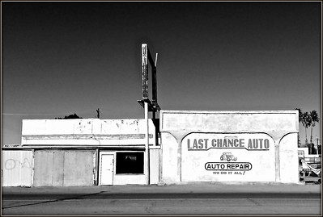

- Time Required
- 8–10 hours, including reading time
You’ve made it to the last full week of the course! This week you will do the following:
- Finish and submit your Recommendation Report.
- Complete any other remaining work in the course that is still open.
- Fill out the SPOT Survey and final Check-In Survey for the course.
The Grace Period for all open work in the course closes at 11:59 PM on Friday, December 6.
This week is the last chance to turn in work for the course. No course activities can be due during the last three days of classes, by policy in the Virginia Tech Faculty Handbook, 9.6.1. Next week, you will decide whether to write and submit the Performance Review, the optional final exam, in which you will propose the grade you will receive in the course.
Holidays & Events This Week
- Native American Heritage Month lasts for the entire month of November
- Guru Nanak Gurpurab takes place on Monday, November 27, and marks the birth of the first Sikh guru.
- Kartika Purnima, a Hindu and Jain celebration, also takes place on Monday, November 27, and is the Gods’ festival of light.
- World Aids Day is Friday, December 6. The day focuses on education and awareness of Aids. It is also a day of mourning for people lost to the disease.
If you observe these holidays or events and need me to adjust your due dates, send me a message in Canvas.
Objectives for this Module
After completing this week’s activities, you address the following course objectives:
- Identify and define a problem or subject related to your particular field (or another specific problem according to your assignment’s directions) and assemble and analyze research related to this problem. [CLO 1]
- Analyze the context of this problem or subject and determine appropriate audiences for the unit’s deliverables. [CLO 2]
- Practice workplace genres associated with a team-based research project: a research proposal, meeting minutes, a progress report, a recommendation report or an informational report for non-expert readers, a slide deck presentation of the report, and a video presentation. [CLO 3]
- Practice team and collaborative work in all phases of project management. [CLO 4]
- Design strategies for evaluating the overall effectiveness of the suggested approaches to the researched problem. [CLO 5]
- Illustrate the ethical and human implications of the solutions proposed for solving the problem. [CLO 6]
Activities to Complete
Due Dates
- Target due date for the Recommendation Report is Tuesday, November 28.
- All other work is due by 11:59 PM on Friday, December 6.
- Grace Period:
- Ends at 11:59 PM on Wednesday, December 6 for your Check-in Survey
- Ends at 11:59 PM on Friday, December 6 for all other open work in the course
📚 To Read This Week
📝 To Do This Week
- Finish work on your Recommendation Report, using the these resources:
-
Submit any of the Project Wrappers that you have not yet completed:
- Be sure to complete the Try-Its from Week 13:
💬 To Ask Questions (Optional)
- Optional ways to discuss class issues:
📓 To Check-In This Week
Photo credit: Last Chance by R. Miller on Flickr, used under CC-BY 2.0 license.